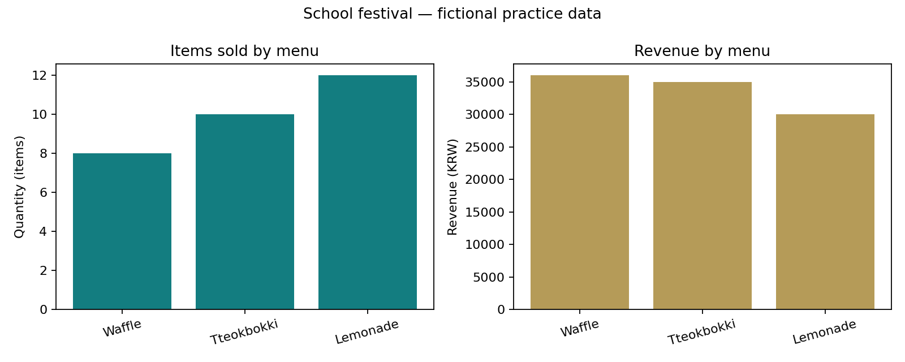

축제 간식 부스, 무엇을 팔면 좋을까?
자료를 내려받아 내 PC에서 분석하고, 숫자를 근거로 설명합니다.
가장 많이 팔린 메뉴가
매출도 가장 높을까요?
떡볶이·와플·레몬에이드 주문 16건으로, 데이터 분석을 처음부터 끝까지 완성합니다.
이 수업용으로 만든 가상 자료입니다. 실제 축제 매출이나 학생 개인정보를 사용하지 않습니다.
시작 전. 내 실습 폴더 만들기
- 위의 실습 파일 묶음 받기를 누르고, 내려받은 ZIP을 모두 압축 풀기합니다. ZIP 안에서 바로 실행하지 않습니다.
- VS Code에서 파일 → 폴더 열기로
festival_first_analysis폴더를 엽니다. CSV는 웹에 업로드하지 않고 내 PC의 파일로 읽습니다. - Python과 Microsoft의 Python 확장을 준비합니다. Ctrl+Shift+P → Python: Select Interpreter로 수업용 Python을 선택합니다.
- VS Code에서 터미널 → 새 터미널을 열고 아래 설치 명령을 한 번 실행합니다. 설치된 PC에서는 반복할 필요가 없습니다.
python -m pip install pandas matplotlib터미널에서 python --version이 표시되는지 확인하세요. 실행 버튼과 터미널은 같은 Python 환경을 사용해야 합니다. 명령을 못 찾으면 VS Code를 다시 열고, Python 설치·환경 선택을 선생님과 확인하세요.
직접 작성하기: 내려받은 완성 예제는 참고용입니다. 같은 폴더에 my_analysis.py를 새로 만들고 아래 1~6단계 코드를 순서대로 추가하세요. 매 단계 Ctrl+S로 저장한 뒤 우측 상단 Python 파일 실행을 누릅니다.
python my_analysis.py터미널로 실행할 때는 위 명령을 입력합니다. 완성 예제를 먼저 확인하려면 python analyze_festival.py를 실행하세요.
데이터를 먼저 읽어 봅시다
한 행은 메뉴 하나의 주문 1건입니다. 4일간의 가상 주문이며, 수량·단가는 양수여야 합니다. 일부 기록에 중복·누락·입력 오류를 넣었습니다.
| 열 이름 | 뜻 | 예시 |
|---|---|---|
| order_id | 고유 주문 번호 | O001 |
| day | 축제 며칠째인지 | 1~4 |
| menu | 메뉴 이름 | Tteokbokki=떡볶이, Waffle=와플, Lemonade=레몬에이드 |
| quantity | 주문 수량(개) | 2 |
| unit_price | 1개 가격(원) | 3,500 |
먼저 예상하기: 떡볶이 3,500원, 와플 4,500원, 레몬에이드 2,500원입니다. 판매량 1위가 매출 1위도 될까요?
CSV를 확인할 때: 가격의 "3,500"처럼 따옴표로 감싼 쉼표는 한 칸 안의 값입니다. pandas가 CSV 규칙에 따라 읽습니다.
1. CSV를 표로 읽기
read_csv()가 CSV를 DataFrame으로 바꿉니다. raw는 원본 표이며, shape는 (행, 열)입니다. folder는 지금 실행하는 .py 파일이 있는 폴더라서 CSV를 찾는 기준이 됩니다.
# 1. 도구를 준비하고 원본 CSV를 DataFrame으로 읽습니다.
from pathlib import Path
import pandas as pd
import matplotlib.pyplot as plt
folder = Path(__file__).resolve().parent
raw = pd.read_csv(folder / 'festival_orders.csv', encoding='utf-8-sig')
print('원본 행·열:', raw.shape)
print(raw.head())
실행 후 확인 원본 행·열: (16, 5). 첫 5개 주문이 표시됩니다.
2. 중복과 공백 정리
주문 번호가 같은 O001이 두 번 들어 있습니다. 같은 주문을 두 번 세지 않도록 첫 기록만 남깁니다. copy()는 작업할 표를 따로 만들고, str.strip()은 메뉴 이름 양쪽 공백을 지웁니다.
# 2. 중복 주문과 글자 양쪽의 공백을 정리합니다.
df = raw.drop_duplicates(subset='order_id').copy()
print('중복 제거:', len(raw) - len(df), '행')
df['menu'] = df['menu'].str.strip()
실행 후 확인 중복 제거: 1 행. 남은 주문은 15행입니다.
3. 숫자 변환과 분석 대상 선택
숫자로 바꿀 수 없는 미입력은 NaN이 됩니다. 가격의 쉼표를 먼저 없애고 숫자로 바꿉니다. 이 예제는 반품 없는 판매 기록이므로 수량·단가가 양수인 행만 사용합니다. 제외한 행은 별도 CSV에 남깁니다. 결측을 0으로 채우면 실제 0개 판매와 혼동하므로 여기서는 대체하지 않습니다.
# 3. 숫자로 바꾸고, 분석할 수 없는 수량을 별도로 보관합니다.
df['quantity'] = pd.to_numeric(df['quantity'], errors='coerce')
df['unit_price'] = pd.to_numeric(
df['unit_price'].str.replace(',', '', regex=False), errors='coerce'
)
print('수량 결측:', df['quantity'].isna().sum(), '행')
valid = (df['quantity'] > 0) & (df['unit_price'] > 0)
excluded = df.loc[~valid].copy()
excluded.to_csv(folder / 'excluded_orders.csv', index=False, encoding='utf-8-sig')
df = df.loc[valid].copy()
print('분석 제외:', len(excluded), '행')
print('분석에 사용:', len(df), '행')
실행 후 확인 수량 결측: 2 행 / 분석 제외: 3 행 / 분석에 사용: 12 행
4. 판매량과 매출 비교
수량 × 단가로 주문별 매출을 만들고, groupby()로 같은 메뉴를 묶어 sum()으로 합칩니다. sort_values()는 매출이 큰 메뉴부터 정렬합니다. 많이 팔린 메뉴와 매출이 높은 메뉴가 같은지 비교하세요.
# 4. 주문별 매출을 계산하고 메뉴별로 판매량·매출을 합칩니다.
df['revenue'] = df['quantity'] * df['unit_price']
summary = df.groupby('menu')[['quantity', 'revenue']].sum()
summary = summary.sort_values('revenue', ascending=False)
print(summary.to_string(float_format=lambda x: f'{x:.0f}'))
print('총판매량:', int(df['quantity'].sum()), '개')
print('총매출:', int(df['revenue'].sum()), '원')
실행 후 확인 와플 8개·36,000원 / 떡볶이 10개·35,000원 / 레몬에이드 12개·30,000원. 총 30개·101,000원
5. 가공한 표 저장
원본을 유지하고 새 파일로 저장합니다. 정제 표의 인덱스는 불필요해 index=False를 씁니다. summary는 메뉴명이 인덱스이므로 기본값으로 함께 저장합니다. utf-8-sig는 엑셀에서도 한글을 읽기 편한 인코딩입니다.
# 5. 정제한 표와 요약표를 새 CSV 파일로 저장합니다.
df.to_csv(folder / 'festival_clean.csv', index=False, encoding='utf-8-sig')
summary.to_csv(folder / 'menu_summary.csv', encoding='utf-8-sig')
실행 후 확인 festival_clean.csv와 menu_summary.csv가 생깁니다. 원본 festival_orders.csv는 그대로입니다.
6. 그래프 저장과 현상 해석
판매량(개)과 매출(원)은 단위가 달라 그래프를 나누고, 막대축은 0부터 시작합니다. savefig()로 PNG를 저장한 다음 show()로 창을 엽니다. 한글 글꼴 설치 차이를 피하려고 그래프 메뉴명·축은 영어로 표시합니다.
# 6. 판매량과 매출을 서로 다른 축에 그린 뒤 이미지로 저장합니다.
fig, axes = plt.subplots(1, 2, figsize=(10, 4))
axes[0].bar(summary.index, summary['quantity'], color='#137d80')
axes[0].set(title='Items sold by menu', ylabel='Quantity (items)')
axes[1].bar(summary.index, summary['revenue'], color='#b59b58')
axes[1].set(title='Revenue by menu', ylabel='Revenue (KRW)')
for ax in axes:
ax.set_ylim(bottom=0)
ax.tick_params(axis='x', labelrotation=15)
fig.suptitle('School festival — fictional practice data')
fig.tight_layout()
fig.savefig(folder / 'festival_chart.png', dpi=160)
print('저장 완료: festival_clean.csv, menu_summary.csv, excluded_orders.csv, festival_chart.png')
plt.show()
실행 후 확인 festival_chart.png와 그래프 창을 확인합니다. 창을 닫으면 실행이 끝납니다.
7. 결과를 근거로 설명하기

내 실행 결과와 비교할 정답 표
| 메뉴 | 판매량(개) | 매출(원) |
|---|---|---|
| 와플 | 8 | 36,000 |
| 떡볶이 | 10 | 35,000 |
| 레몬에이드 | 12 | 30,000 |
| 합계 | 30 | 101,000 |
- 가장 많이 팔린 메뉴와 판매량을 적으세요.
- 매출이 가장 높은 메뉴와 매출액을 적으세요.
- 두 순위가 다른 이유를 단가와 수량으로 설명하세요.
- 이 자료만 보고 ‘와플을 팔면 이익이 가장 크다’고 결론 낼 수 있을까요?
해석 예시와 분석의 한계 확인
레몬에이드는 12개로 판매량이 가장 많지만, 와플은 개당 가격이 높아 8개만 팔려도 매출 36,000원으로 1위입니다. 매출 = 수량 × 단가이므로 판매량 순위와 매출 순위가 다를 수 있습니다.
원가·재료비·준비 시간은 없으므로 이익 1위는 알 수 없습니다. 제외한 3건의 실제 수량도 알 수 없어 원래 전체 주문의 매출을 확정할 수 없습니다. 분석 대상은 정제 후 12건이며, 작은 가상 자료의 결과를 실제 학생 전체의 선호로 일반화할 수 없습니다.
아래 기록은 이 브라우저에만 임시 저장됩니다. 마지막에 TXT로 내려받아 실습 폴더에 넣으세요.
8. 파일을 챙겨서 마무리하기
VS Code 왼쪽 탐색기에서 결과 파일을 확인합니다. 결과가 안 보이면 새로 고침하고, CSV는 열어서 내용까지 확인하세요.
| 파일 | 역할 |
|---|---|
| festival_orders.csv | 원본 자료 · 그대로 보관 |
| my_analysis.py | 내가 작성한 전체 코드 |
| festival_clean.csv | 분석에 사용한 12건과 매출 열 |
| excluded_orders.csv | 분석에서 제외한 3건 · 처리 이유는 기록에 설명 |
| menu_summary.csv | 메뉴별 판매량·매출 |
| festival_chart.png | 두 지표를 비교한 그래프 |
| analysis_note.txt | 나의 근거·해석·한계 |
제출: 위 파일을 넣은 폴더를 ZIP으로 압축해 선생님이 정한 제출처에 올립니다. 이 웹앱은 자동 제출을 받지 않습니다.
9. 집에서 세 번 반복하기
완료한 폴더를 보관하고, 회차마다 새 폴더에서 시작합니다. 원본 CSV는 바꾸지 않고 코드를 바꿉니다.
- 1회 · 재현: 안내를 보며 직접 입력합니다. 16행 → 중복 1행 제거 → 분석 제외 3행 → 최종 12행, 총매출 101,000원을 확인합니다.
- 2회 · 기준 변경: 폴더를
attempt_02로 복사합니다. 4단계의 정렬 기준을revenue에서quantity로 바꾸기 전에 1위를 예상합니다. 왜 순서만 바뀌고 전체 매출은 그대로인지 기록합니다. - 3회 · 새 질문:
attempt_03폴더에서 그룹 기준을menu대신day로 바꾸고 그래프 제목도 고칩니다. 날짜별 매출이 19,000 / 24,500 / 27,000 / 30,500원인지 확인합니다. 메뉴명을 찾는 해석 문항 대신 ‘어느 날 매출이 높았는가’를 씁니다.
확인 기준: 실행 성공뿐 아니라 원본·가공 자료 구분, 전처리 이유, 그래프 단위, 수치 근거, 분석의 한계를 자기 말로 설명합니다.
매 시간. 내 코드와 파일을 관리하는 방법
개인 로그인 없이도 실습할 수 있습니다. 학습 파일의 기준은 내 VS Code 폴더로 정합니다.
SW_2026_final아래에lesson_01,first_analysis,lesson_02처럼 수업별 폴더를 만듭니다.- 수업 시작 5분: 지난 폴더를 열고 코드를 한 번 실행합니다.
- 개념·영상 확인 후 20분 이상: 예제의 모든 코드를 직접 입력해 실행하고, 조건이나 값을 한 가지 바꿔 결과를 예측합니다.
- 수업 마무리 5분: 코드·CSV·그래프·분석 기록을 저장하고 폴더를 백업합니다. 학교에서 허용한 USB·개인 저장소 등을 사용하세요.
- 다른 PC에서는 폴더 전체를 옮겨 엽니다. 웹 기록도 옮기려면 해당 페이지의 JSON 백업을 받아 같은 페이지에서 복원합니다.
웹앱에도 작성 공간이 있습니다. 02번의 코드·예측·해석 칸과 05번의 보고서 칸은 현재 브라우저에 저장됩니다. 로그인 계정에 저장되거나 PC 사이에 자동 동기화되지는 않습니다. 공용 PC에서는 다음 사용자에게 기록이 남을 수 있으므로 개인 정보 대신 수업 코드만 작성하세요.
02번 실습의 JSON 백업과 05번 보고서의 JSON 백업은 서로 다른 기록입니다. 필요한 쪽에서 각각 받아 복원하세요. 브라우저 데이터 삭제·시크릿 모드 종료·PC 초기화에 대비해 .py와 보고서 파일을 따로 보관합니다.
오류가 나면 여기부터 확인하세요
- ModuleNotFoundError: pandas 또는 matplotlib
- 선택한 Python 환경에서 설치했는지 확인합니다. 실행 버튼과 새 터미널의 Python 환경을 맞춘 뒤 준비 단계 설치 명령을 실행합니다.
- FileNotFoundError: festival_orders.csv
- ZIP을 모두 풀었는지, 내 .py 파일과 CSV가 같은 폴더에 있는지 확인합니다. 파일 이름 뒤에 (1)이 붙었으면 원래 이름으로 맞춥니다.
- NameError: __file__
- 코드 일부를 대화형 창에 붙여넣지 말고 .py 파일 전체를 ‘Python 파일 실행’으로 실행하세요.
- SyntaxError 또는 KeyError
- 따옴표·괄호·들여쓰기와 열 이름 quantity, unit_price, revenue의 철자를 비교합니다.
- 실행이 끝나지 않은 것처럼 보여요
- 그래프 창이 열려 있으면 닫으세요. PNG는 이미 같은 폴더에 저장됩니다.
도움말: VS Code Python 공식 안내 · pandas 기초 안내